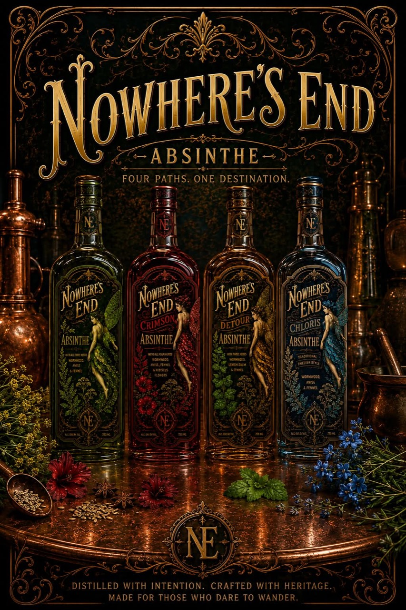

Absinthe Verte
Verte
The classic green pour: wormwood, anise, fennel, hyssop, and melissa with a jade louche and alpine bitterness.
Explore VerteNowhere's End / Terpedia
Four absinthes, four distinct rituals: Verte, Bleue, Crimson, and Detour. Explore the bottle stories, the serves, the botanicals, and the aromatic world behind each pour.

Positioning
Each absinthe has its own mood, serve, and botanical signature. The herb and molecule library adds depth for anyone who wants to follow the flavors all the way back to the plant.
Absinthe Verte
The classic green pour: wormwood, anise, fennel, hyssop, and melissa with a jade louche and alpine bitterness.
Explore VerteAbsinthe Crimson
Hibiscus, rosehip, citrus, and spice bring ruby color and floral brightness to a dramatic table pour.
Explore CrimsonAbsinthe Detour
The off-ramp from heavy licorice: citrus, juniper, butterfly pea, and a blue-to-violet transformation in the glass.
Explore DetourAbsinthe Bleue
Clear in the bottle, alpine in character, and built for a slow louche with cool fennel and herb lift.
Explore BleueHistory
From Swiss stillrooms to Paris cafés, prohibition, myth, and revival: a sourced history page with timeline notes and illustrations.
Read the historyN/A Ritual
A non-alcoholic absinthe-style build focused on bitterness, louche texture, alpine herbs, and the slow water ritual rather than alcohol.
Explore the N/A pageArt & Literature
A practical canon of paintings, books, motifs, and quote fragments that shaped absinthe’s visual and literary mythology.
Browse the canonHerb Library
Each herb page includes history, historical medicinal use, recipe role, and a linked set of its principal molecules.
Browse herbsMolecule Library
Molecule pages connect aroma to receptor systems, metabolism, and known physiological relevance without flattening nuance into marketing copy.
Browse molecules